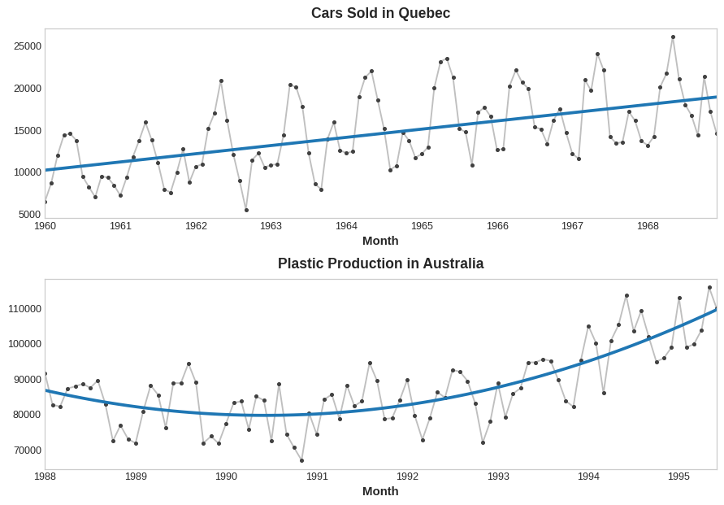
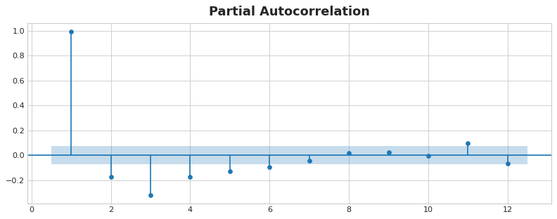
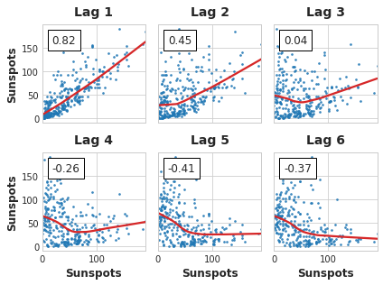

Pandas 处理表格很有用的工具.
1 2 3 4 5 6 7 melbourne_file_path = '../input/melbourne-housing-snapshot/melb_data.csv' melbourne_data = pd.read_csv(melbourne_file_path) melbourne_data.columns data.describe() data['123' ].mean() data.head()
模型验证 1 2 3 4 5 6 7 8 9 10 11 12 from sklearn.model_selection import train_test_splittrain_X, val_X, train_y, val_y = train_test_split(X, y, random_state = 0 ) melbourne_model = DecisionTreeRegressor(random_state = 0 ) melbourne_model.fit(train_X, train_y) val_predictions = melbourne_model.predict(val_X) print (mean_absolute_error(val_y, val_predictions))
决策树 1 2 3 4 5 6 7 8 9 10 11 12 13 14 15 16 17 18 19 20 21 22 23 24 25 y = home_data.SalePrice feature_names = ['LotArea' , 'YearBuilt' ,'1stFlrSF' ,'2ndFlrSF' ,'FullBath' ,'BedroomAbvGr' ,'TotRmsAbvGrd' ]X = home_data[feature_names] from sklearn.tree import DecisionTreeRegressoriowa_model = DecisionTreeRegressor(random_state=1 ) iowa_model.fit(X, y) predictions = iowa_model.predict(X) print (predictions)
过拟合 可以通过控制叶节点最大数量来防止过拟合.1 2 3 4 5 6 7 8 9 10 11 12 13 14 from sklearn.metrics import mean_absolute_errorfrom sklearn.tree import DecisionTreeRegressordef get_mae (max_leaf_nodes, train_X, val_X, train_y, val_y ): model = DecisionTreeRegressor(max_leaf_nodes=max_leaf_nodes, random_state=0 ) model.fit(train_X, train_y) preds_val = model.predict(val_X) mae = mean_absolute_error(val_y, preds_val) return (mae) for max_leaf_nodes in [5 , 50 , 500 , 5000 ]: my_mae = get_mae(max_leaf_nodes, train_X, val_X, train_y, val_y) print ("Max leaf nodes: %d \t\t Mean Absolute Error: %d" %(max_leaf_nodes, my_mae))
随机森林 用法和上面的决策树完全一样,只是核心算法变了.1 RandomForestRegressor(random_state=1 )
深度学习 基础的神经元 1 2 3 4 5 6 7 8 9 from tensorflow import kerasfrom tensorflow.keras import layersmodel = keras.Sequential([ layers.Dense(units=1 , input_shape=[3 ]) ]) w, b = model.weights
模型 1 2 3 4 5 6 7 8 model = keras.Sequential([ layers.Dense(32 , input_shape=[8 ]), layers.Activation('relu' ), layers.Dense(32 ), layers.Activation('relu' ), layers.Dense(1 ), ])
优化器 1 2 3 4 5 model.compile ( optimizer="adam" , loss="mae" , )
1 2 3 4 5 6 7 8 9 10 11 12 13 14 15 16 17 18 19 20 21 22 from tensorflow import kerasfrom tensorflow.keras import layersmodel = keras.Sequential([ layers.Dense(128 , activation='relu' , input_shape=input_shape), layers.Dense(128 , activation='relu' ), layers.Dense(64 , activation='relu' ), layers.Dense(1 ), ]) model.compile ( optimizer='adam' , loss='mae' , ) history = model.fit( X, y, batch_size=128 , epochs=200 , ) import pandas as pdhistory_df = pd.DataFrame(history.history) history_df.loc[5 :, ['loss' ]].plot();
1 2 3 4 5 6 7 8 9 10 11 12 13 14 15 16 17 18 19 from tensorflow.keras.callbacks import EarlyStoppingearly_stopping = EarlyStopping( min_delta=0.001 , patience=20 , restore_best_weights=True , ) history = model.fit( X_train, y_train, validation_data=(X_valid, y_valid), batch_size=256 , epochs=500 , callbacks=[early_stopping], verbose=0 , ) history_df = pd.DataFrame(history.history) history_df.loc[:, ['loss' , 'val_loss' ]].plot(); print ("Minimum validation loss: {}" .format (history_df['val_loss' ].min ()))
激活函数 relu elu selu swish mish gelu
以及tanh和softmax等.
Dense 全连接层
Dropout 随机选某些节点踢出当前轮的训练,这让神经网络少学习一些局部的特征,注重全局特征,进而避免过拟合.1 layers.Dropout(rate=0.3 ),
BatchNormalization 批量归一化
1 layers.BatchNormalization(),
二元分类 构建模型1 2 3 4 5 6 7 8 9 10 11 12 13 14 15 16 17 18 from tensorflow import kerasfrom tensorflow.keras import layersmodel = model = keras.Sequential([ layers.BatchNormalization(input_shape=input_shape), layers.Dense(256 ,activation='relu' ), layers.BatchNormalization(), layers.Dropout(0.3 ), layers.Dense(256 ,activation='relu' ), layers.BatchNormalization(), layers.Dropout(0.3 ), layers.Dense(1 ,activation='sigmoid' ), ]) model.compile ( optimizer='adam' , loss='binary_crossentropy' , metrics=['binary_accuracy' ], )
1 2 3 4 5 6 7 8 9 10 11 12 13 14 15 16 17 18 19 20 21 22 23 24 25 26 27 28 29 30 31 32 33 34 35 36 37 38 39 40 41 42 43 44 45 46 47 48 49 50 51 52 53 54 55 56 57 58 import pandas as pdfrom sklearn.model_selection import train_test_splitfrom sklearn.preprocessing import StandardScaler, OneHotEncoderfrom sklearn.impute import SimpleImputerfrom sklearn.pipeline import make_pipelinefrom sklearn.compose import make_column_transformerhotel = pd.read_csv('../input/dl-course-data/hotel.csv' ) X = hotel.copy() y = X.pop('is_canceled' ) X['arrival_date_month' ] = \ X['arrival_date_month' ].map ( {'January' :1 , 'February' : 2 , 'March' :3 , 'April' :4 , 'May' :5 , 'June' :6 , 'July' :7 , 'August' :8 , 'September' :9 , 'October' :10 , 'November' :11 , 'December' :12 } ) features_num = [ "lead_time" , "arrival_date_week_number" , "arrival_date_day_of_month" , "stays_in_weekend_nights" , "stays_in_week_nights" , "adults" , "children" , "babies" , "is_repeated_guest" , "previous_cancellations" , "previous_bookings_not_canceled" , "required_car_parking_spaces" , "total_of_special_requests" , "adr" , ] features_cat = [ "hotel" , "arrival_date_month" , "meal" , "market_segment" , "distribution_channel" , "reserved_room_type" , "deposit_type" , "customer_type" , ] transformer_num = make_pipeline( SimpleImputer(strategy="constant" ), StandardScaler(), ) transformer_cat = make_pipeline( SimpleImputer(strategy="constant" , fill_value="NA" ), OneHotEncoder(handle_unknown='ignore' ), ) preprocessor = make_column_transformer( (transformer_num, features_num), (transformer_cat, features_cat), ) X_train, X_valid, y_train, y_valid = \ train_test_split(X, y, stratify=y, train_size=0.75 ) X_train = preprocessor.fit_transform(X_train) X_valid = preprocessor.transform(X_valid) input_shape = [X_train.shape[1 ]]
1 2 3 4 5 6 7 8 9 10 11 12 13 14 15 16 17 early_stopping = keras.callbacks.EarlyStopping( patience=5 , min_delta=0.001 , restore_best_weights=True , ) history = model.fit( X_train, y_train, validation_data=(X_valid, y_valid), batch_size=512 , epochs=200 , callbacks=[early_stopping], ) history_df = pd.DataFrame(history.history) history_df.loc[:, ['loss' , 'val_loss' ]].plot(title="Cross-entropy" ) history_df.loc[:, ['binary_accuracy' , 'val_binary_accuracy' ]].plot(title="Accuracy" )
缺失值的处理
直接删掉一整行(有可能丢失重要信息)
归因法(用平均数填补缺失值)
开一个新特征:missing,然后设成true,然后再用平均值填补空白
离散值的处理
直接删掉.
处理为一个递增值,例如”偶尔””经常”.
开桶记录多个值,例如”黄色””绿色””苹果””香蕉”.
Pipeline 管道 很好用的标准化流程.
1 2 3 4 5 6 7 8 9 10 11 12 13 14 15 16 17 18 19 20 from sklearn.compose import ColumnTransformerfrom sklearn.pipeline import Pipelinefrom sklearn.impute import SimpleImputerfrom sklearn.preprocessing import OneHotEncodernumerical_transformer = SimpleImputer(strategy='constant' ) categorical_transformer = Pipeline(steps=[ ('imputer' , SimpleImputer(strategy='most_frequent' )), ('onehot' , OneHotEncoder(handle_unknown='ignore' )) ]) preprocessor = ColumnTransformer( transformers=[ ('num' , numerical_transformer, numerical_cols), ('cat' , categorical_transformer, categorical_cols) ])
交叉验证 每轮用不同的数据进行验证,其他的数据测试,因为验证的数据每轮都不太一样而且前一轮用于训练的数据这一轮可能验证,所以叫交叉验证.
XGBoost 一个仅对树模型有效的算法,据说因为要保证加法性质所以不能用神经网络.
数据泄露 时间上存在某种关联的数据.不能逆转时间(即这个指标出现的时间在你预测之后,但是你训练用了这个指标).
还有就是测试数据不小心外泄了,模型拿到测试数据加以训练,分自然很高.
时间序列 根据历史数据预测未来.
时间序列的两个特殊特征是”时间步长特征”和”时间滞后特征”.
时间步长特征与时间滞后特征 以销售额为例.
如果模型发现,周末的销售量似乎比较好,这就是时间步长特征,与时间戳本身有关.
这两个特征的区别在于,时间步长与时间戳本身有关,时间滞后特征与前几天的数据有关(体现为前几天数据的影响”滞留”到了今天).
1 2 3 4 5 6 7 8 9 10 11 12 13 14 15 16 17 18 19 20 21 22 23 24 25 26 27 28 29 30 31 32 33 34 35 36 37 38 39 40 41 42 43 44 45 from learntools.core import binderbinder.bind(globals ()) from learntools.time_series.ex1 import *from pathlib import Pathfrom learntools.time_series.style import * import pandas as pdimport matplotlib.pyplot as pltimport numpy as npimport seaborn as snsfrom sklearn.linear_model import LinearRegressiondata_dir = Path('../input/ts-course-data/' ) comp_dir = Path('../input/store-sales-time-series-forecasting' ) book_sales = pd.read_csv( data_dir / 'book_sales.csv' , index_col='Date' , parse_dates=['Date' ], ).drop('Paperback' , axis=1 ) book_sales['Time' ] = np.arange(len (book_sales.index)) book_sales['Lag_1' ] = book_sales['Hardcover' ].shift(1 ) book_sales = book_sales.reindex(columns=['Hardcover' , 'Time' , 'Lag_1' ]) ar = pd.read_csv(data_dir / 'ar.csv' ) dtype = { 'store_nbr' : 'category' , 'family' : 'category' , 'sales' : 'float32' , 'onpromotion' : 'uint64' , } store_sales = pd.read_csv( comp_dir / 'train.csv' , dtype=dtype, parse_dates=['date' ], infer_datetime_format=True , ) store_sales = store_sales.set_index('date' ).to_period('D' ) store_sales = store_sales.set_index(['store_nbr' , 'family' ], append=True ) average_sales = store_sales.groupby('date' ).mean()['sales' ]
趋势 趋势就是趋势…
移动平均线图 就是什么,5日均线,10日均线的图,并不高大上.
趋势建模 坐标系建模.

上下两个分别使用下面的建模:1 2 target = a * time + b target = a * time ** 2 + b * time + c
一般而言不建议使用非常多次的多项式建模,因为模型会非常受项最高的数据影响.
季节性 有两种方式拟合,使用季节特征或傅里叶特征.
季节特征 根据季节图手动选择特征,然后删掉一个(因为这个会被并入bias),例如一周的周期删掉周一(把周一的影响并入bias),适用于数据采集很广的情况.
傅里叶特征 因为傅里叶本质上就是一堆神秘三角函数叠一起,所以适用于数据采集较少的情况.
(例如一年四季,但是周太小了适合与指标一起建模)
序列相关性与时间相关性 其实就是两个特征的翻版,只不过换成相关性了.
时间序列特征 介绍了一个新图叫做Partial autocorrelation()

根据这个图判断滞后几步带来的影响比较大,滞后几步能够较好的模拟.
还有一个滞后图,用于判断数据的线性相关性(或许可以尝试转线性相关性)

混合模型 特征工程 模型只学他们能学到的东西才能发挥最大性能,所以需要对数据下手.
不对数据做任何处理的叫baseline,可以合成数据.
比如对混凝土下手,加一些比如水比例的数据作为新特征,尽可能构造线性数据让模型识别规律,更好预测.
MI 互信息 知道这个对判断结果影响有多大.
通过分组法实现.例如:顾客对于同一件商品50%买了50%没买.
常见的互信息挖掘例子可以在生活中找到.
K-means 因为是不带标签的,常用于通过聚类发现特征.
PCA 主成分分析 通过对数据条目间建立线性关系来找到核心的成分.
目标编码 把字符串标签映射为数字的方法.
目标编码:用同一品牌的均价代替这个品牌的标签,比如FluuC虚拟币卖了50,100,150三个,就用100的均价代替FluuC这个虚拟币.
但是目标编码在品牌数据量很小的情况下很容易过拟合,比如只有一个某品牌的数据,可能就会严重拉大,而且要防止数据泄露.
平滑处理 为了解决品牌数据过少的问题,可以使用平滑处理,设计公式让该品牌数据过少时品牌的值趋向于整体均值,数据很多时品牌的值趋向于品牌的均值.
缩放和归一化 缩放是指把数据线性映射,归一化则是指把数据变成近似正态分布的部分(通过Box-Cox变换).
CV(计算机视觉) CV大致过程就是,首先把图像拆成好几块(用特征分类器),然后
CNN 卷积神经网络 有卷积核,对特定的模式比较敏感,所以能够进行图像模式识别.
Convolutional Classifier 卷积分类器 图片->base(卷积基)->head(密集头)->结果
卷积基主要用于拆分图像提取特征,但是拆分本身是不涉及特征识别的,所以卷积基可以复用.
特征提取 图片—(乘上一个卷积核)->特征—(过一遍relu)->更明显的特征—(过一遍池化)->压缩过的特征.
卷积也称滤波.
滑动窗口 取max…滑动起来了,自己设置步长和采样.
自定义卷积神经网络 卷积快: (卷积->ReLU->池化)
数据增强 可以对原始图片做一些反转,或者旋转,因为图片的主体不变的话对图像本身做一些变换是没问题的,从而扩充数据集,让模型更泛化.
杂项
Kaggle的提交是云端保存版本,选择run all然后在这个版本中选择文件提交评测.
row是横行,column是竖列
因为神经网络训练依赖求导,而其他激活函数在数值取极大或极小的时候效果会很不明显,relu把导数设成1,避免了神经网络无法训练的问题.